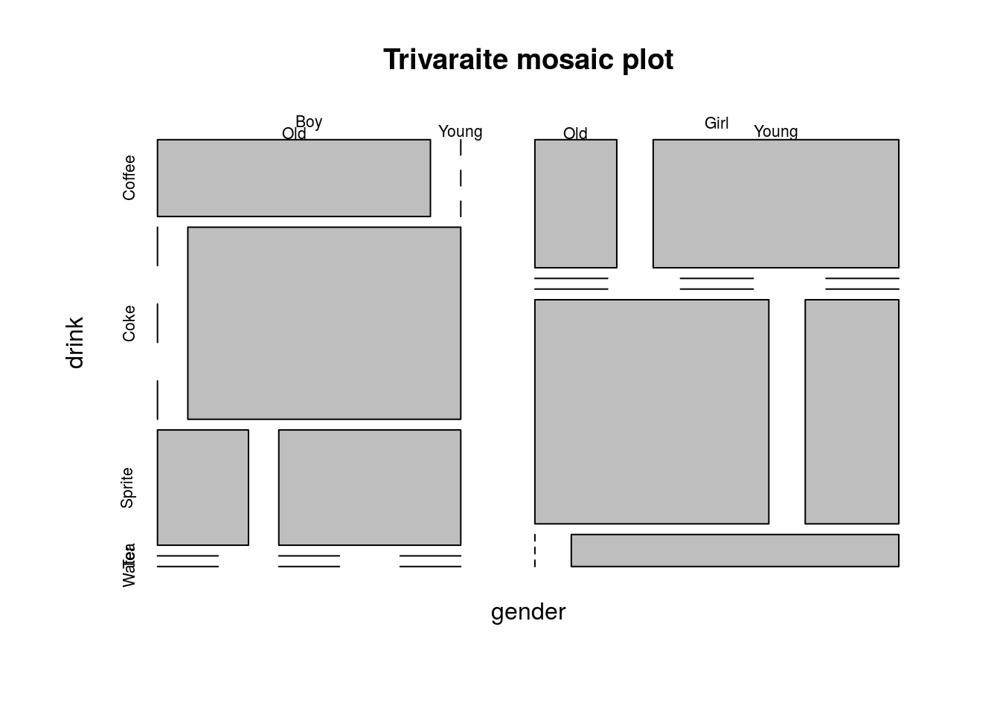
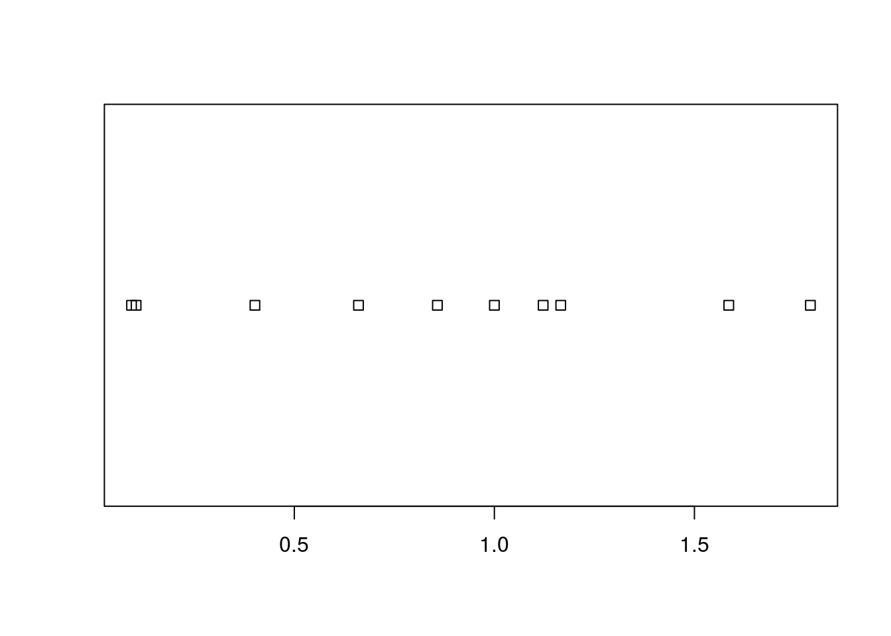
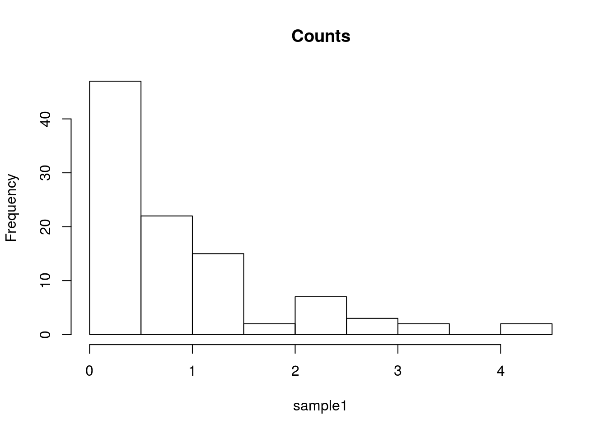
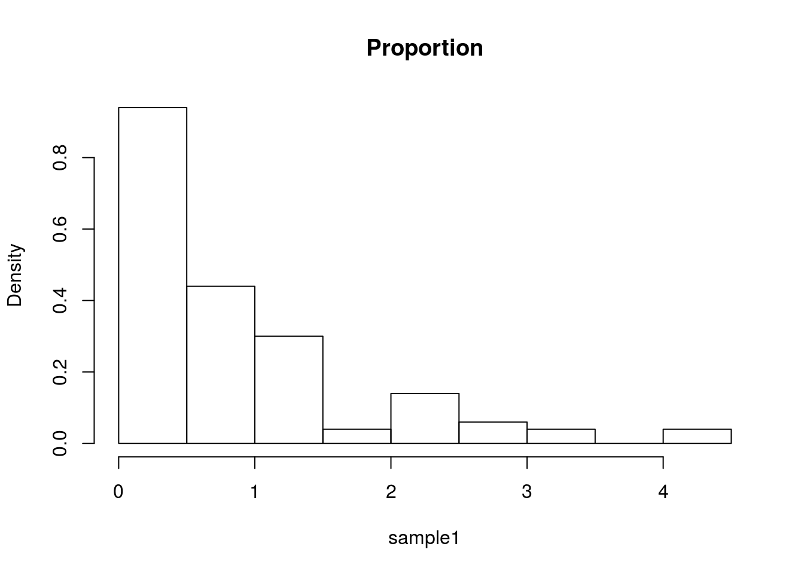
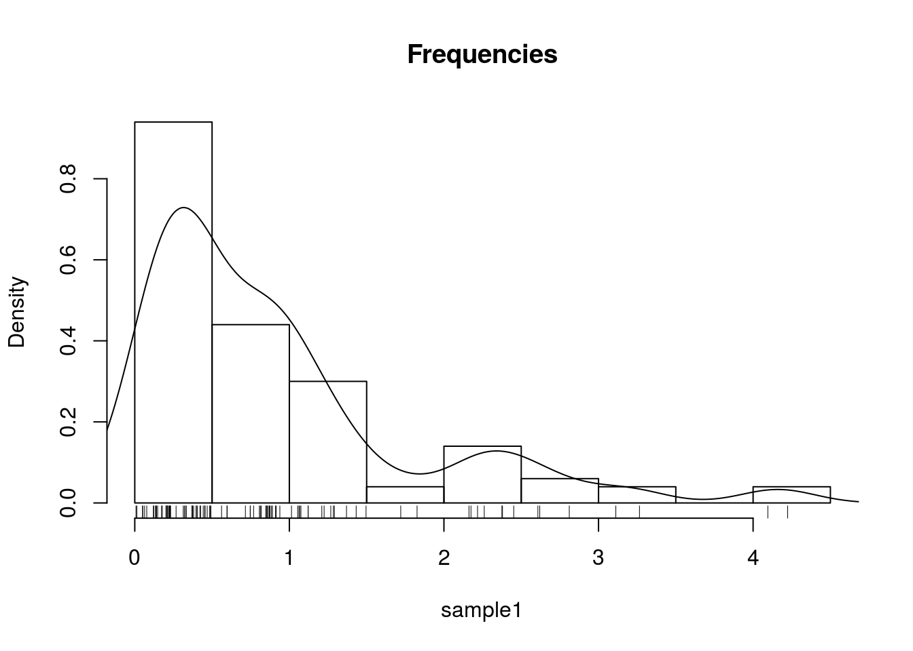
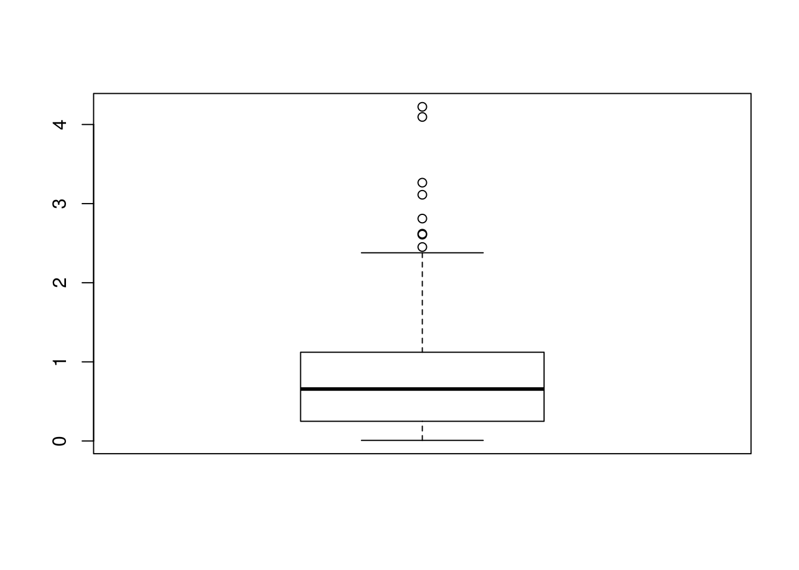
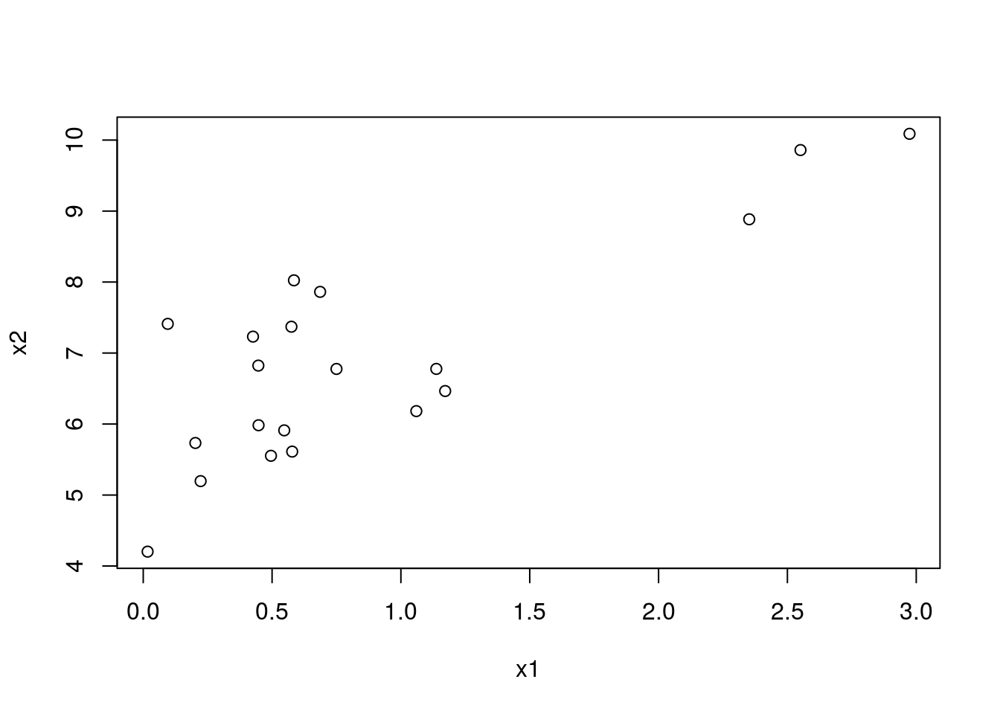
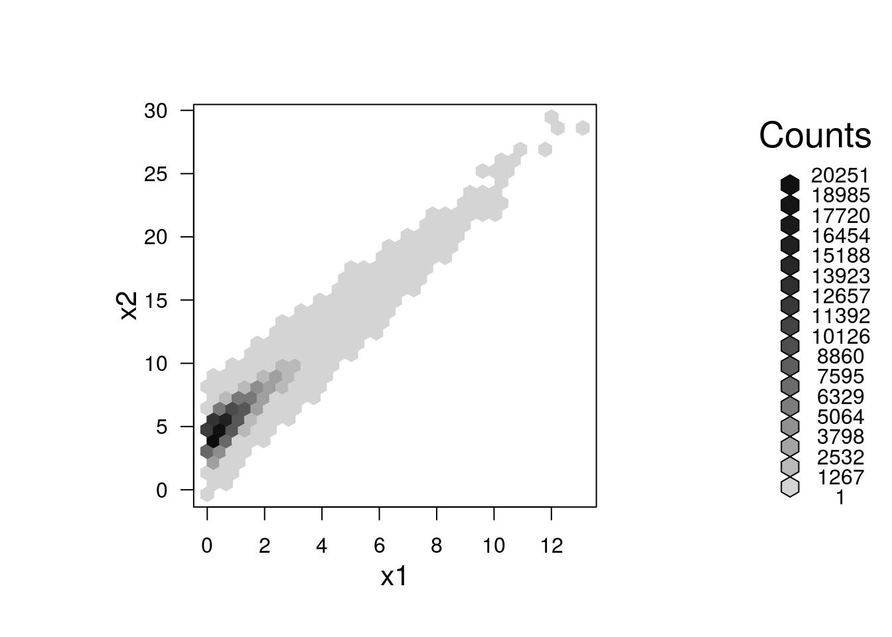
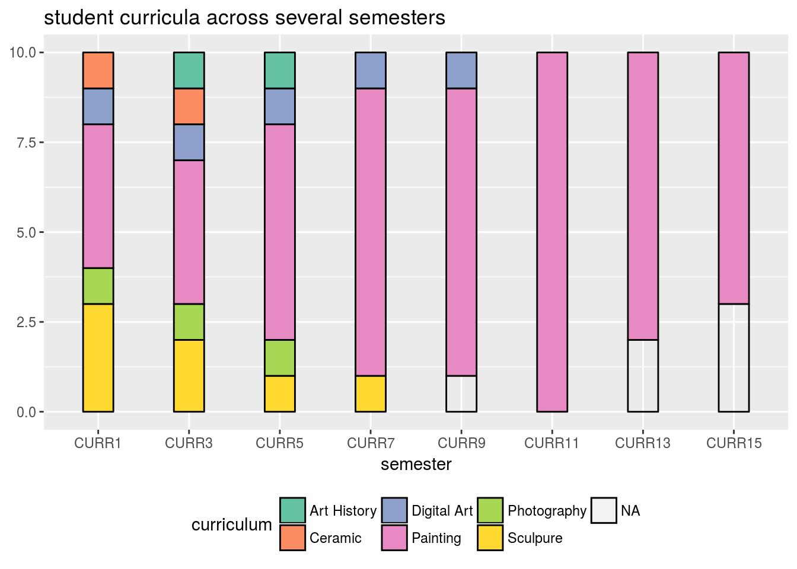

1 Preface
1.1 Notation Conventions
1.2 Acknowledgements
2 Plotting
2.1 The graphics System
2.1.1 Using Existing Plotting Functions
2.1.1.1 Scatter Plot
2.1.2 Exporting a Plot
2.1.3 Fancy graphics Examples
2.1.3.1 Line Graph
2.1.3.2 Rosette
2.1.3.3 Arrows
2.1.3.4 Arrows as error bars
2.1.3.5 Histogram
2.1.3.5.1 Spiral Squares
2.1.3.6 Circles
2.1.3.7 Spiral
2.2 The ggplot2 System
2.2.1 Extensions of the ggplot2 System
2.3 Interactive Graphics
2.3.1 Plotly
2.4 r2d3
2.5 Bibliographic Notes
2.6 Practice Yourself
3 Introduction
3.1 What is R?
3.2 The R Ecosystem
3.3 Bibliographic Notes
3.4 Practice Yourself
4 Reports
4.1 knitr
4.1.1 Installation
4.1.2 Pandoc Markdown
4.1.3 Rmarkdown
4.1.4 BibTex
4.1.5 Compiling
4.2 bookdown
4.3 Shiny
4.3.1 Installation
4.3.2 The Basics of Shiny
4.3.3 Beyond the Basics
4.3.3.1 Widgets
4.3.3.2 Output Elements
4.3.4 shinydashboard
4.4 flexdashboard
4.5 Bibliographic Notes
4.6 Practice Yourself
5 Sparse Representations
5.1 Sparse Matrix Representations
5.1.1 Coordinate List Representation
5.1.2 Compressed Column Oriented Representation
5.1.3 Compressed Row Oriented Representation
5.1.4 Sparse Algorithms
5.2 Sparse Matrices and Sparse Models in R
5.2.1 The Matrix Package
5.2.2 The MatrixModels Package
5.2.3 The glmnet Package
5.2.4 The SparseM Package
5.3 Bibliographic Notes
5.4 Practice Yourself
6 Memory Efficiency
6.1 Efficient Computing from RAM
6.1.1 Summary Statistics from RAM
6.2 Computing from a Database
6.3 Computing From Efficient File Structrures
6.3.1 bigmemory
6.4 ff
6.5 matter
6.6 iotools
6.7 HDF5
6.8 DelayedArray
6.8.1 DelayedMatrixStats
6.8.2 beachmat
6.8.3 restfulSE
6.9 Computing from a Distributed File System
6.10 Bibliographic Notes
6.11 Practice Yourself
7 Parallel Computing
7.1 Implicit Parallelism
7.2 Explicit Parallelism
7.2.1 Caution: Implicit with Explicit Parallelism
7.3 Bibliographic Notes
7.4 Practice Yourself
8 Numerical Linear Algebra
8.1 LU Factorization
8.2 Cholesky Factorization
8.3 QR Factorization
8.4 Singular Value Factorization
8.5 Iterative Methods
8.6 Solving the OLS Problem
8.7 Bibliographic Notes
8.8 Practice Yourself
9 Convex Optimization
9.1 Theoretical Backround
9.2 Optimizing with R
9.2.1 The optim Function
9.2.2 The nloptr Package
9.2.3 minqa Package
9.3 Bibliographic Notes
9.4 Practice Yourself
10 RCpp
10.1 Bibliographic Notes
10.2 Practice Yourself
11 Debugging Tools
11.1 Bibliographic Notes
11.2 Practice Yourself
12 R Basics
12.0.1 Other IDEs
12.1 File types
12.2 Simple calculator
12.3 Probability calculator
12.4 Getting Help
12.5 Variable Asignment
12.6 Missing
12.7 Piping
12.8 Vector Creation and Manipulation
12.9 Search Paths and Packages
12.10 Simple Plotting
12.11 Object Types
12.12 Data Frames
12.13 Exctraction
12.14 Augmentations of the data.frame class
12.15 Data Import and Export
12.15.1 Import from WEB
12.15.2 Export as CSV
12.15.3 Export non-CSV files
12.15.4 Reading From Text Files
12.15.5 Writing Data to Text Files
12.15.6 .XLS(X) files
12.15.7 Massive files
12.15.8 Databases
12.16 Functions
12.17 Looping
12.18 Apply
12.19 Recursion
12.20 Dates and Times
12.21 Bibliographic Notes
12.22 Practice Yourself
13 Econometrics
13.1 Bibliographic Notes
13.2 Practice Yourself
14 data.table
14.1 Make your own variables
14.2 Join
14.3 Reshaping data
14.3.1 Wide to long
14.3.2 Long to wide
14.4 Bibliographic Notes
14.5 Practice Yourself
15 Psychometrics
15.1 Bibliographic Notes
15.2 Practice Yourself
16 The Hadleyverse
16.1 readr
16.2 dplyr
16.3 tidyr
16.4 reshape2
16.5 stringr
16.6 anytime
16.7 Biblipgraphic Notes
16.8 Practice Yourself
17 Causal Inferense
17.1 Causal Inference From Designed Experiments
17.1.1 Design of Experiments
17.1.2 Randomized Inference
17.2 Causal Inference from Observational Data
17.2.1 Principal Stratification
17.2.2 Instrumental Variables
17.2.3 Propensity Scores
17.2.4 Direct Lieklihood
17.2.5 Regression Discontinuity
17.3 Bibliographic Notes
17.4 Practice Yourself
18 Exploratory Data Analysis
Exploratory Data Analysis (EDA) is a term coined by John W. Tukey in his seminal book (Tukey 1977). It is also (arguably) known as Visual Analytics, or Descriptive Statistics. It is the practice of inspecting, and exploring your data, before stating hypotheses, fitting predictors, and other more ambitious inferential goals. It typically includes the computation of simple summary statistics which capture some property of interest in the data, and visualization. EDA can be thought of as an assumption free, purely algorithmic practice.
In this text we present EDA techniques along the following lines:
- How we explore: with summary-statistics, or visually?
- How many variables analyzed simultaneously: univariate, bivariate, or multivariate?
- What type of variable: categorical or continuous?
18.1 Summary Statistics
18.1.1 Categorical Data
Categorical variables do not admit any mathematical operations on them. We cannot sum them, or even sort them. We can only count them. As such, summaries of categorical variables will always start with the counting of the frequency of each category.
18.1.1.1 Summary of Univariate Categorical Data
# Make some data
gender <- c(rep('Boy', 10), rep('Girl', 12))
drink <- c(rep('Coke', 5), rep('Sprite', 3), rep('Coffee', 6), rep('Tea', 7), rep('Water', 1))
age <- sample(c('Young', 'Old'), size = length(gender), replace = TRUE)
# Count frequencies
table(gender)## gender
## Boy Girl
## 10 12## drink
## Coffee Coke Sprite Tea Water
## 6 5 3 7 1## age
## Old Young
## 9 13If instead of the level counts you want the proportions, you can use prop.table
## gender
## Boy Girl
## 0.4545455 0.545454518.1.1.2 Summary of Bivariate Categorical Data
## gender drink
## [1,] "Boy" "Coke"
## [2,] "Boy" "Coke"
## [3,] "Boy" "Coke"
## [4,] "Boy" "Coke"
## [5,] "Boy" "Coke"
## [6,] "Boy" "Sprite"## drink
## gender Coffee Coke Sprite Tea Water
## Boy 2 5 3 0 0
## Girl 4 0 0 7 118.1.1.3 Summary of Multivariate Categorical Data
You may be wondering how does R handle tables with more than two dimensions. It is indeed not trivial to report this in a human-readable way. R offers several solutions: table is easier to compute with, and ftable is human readable.
## , , age = Old
##
## drink
## gender Coffee Coke Sprite Tea Water
## Boy 2 0 1 0 0
## Girl 1 0 0 5 0
##
## , , age = Young
##
## drink
## gender Coffee Coke Sprite Tea Water
## Boy 0 5 2 0 0
## Girl 3 0 0 2 1## age Old Young
## gender drink
## Boy Coffee 2 0
## Coke 0 5
## Sprite 1 2
## Tea 0 0
## Water 0 0
## Girl Coffee 1 3
## Coke 0 0
## Sprite 0 0
## Tea 5 2
## Water 0 1If you want proportions instead of counts, you need to specify the denominator, i.e., the margins. Think: what is the margin in each of the following outputs?
## drink
## gender Coffee Coke Sprite Tea Water
## Boy 0.20000000 0.50000000 0.30000000 0.00000000 0.00000000
## Girl 0.33333333 0.00000000 0.00000000 0.58333333 0.08333333## drink
## gender Coffee Coke Sprite Tea Water
## Boy 0.3333333 1.0000000 1.0000000 0.0000000 0.0000000
## Girl 0.6666667 0.0000000 0.0000000 1.0000000 1.000000018.1.2 Continous Data
Continuous variables admit many more operations than categorical. We can compute sums, means, quantiles, and more.
18.1.2.1 Summary of Univariate Continuous Data
We distinguish between several types of summaries, each capturing a different property of the data.
18.1.2.2 Summary of Location
Capture the “location” of the data. These include:
The sample mean is non robust. A single large observation may inflate the mean indefinitely. For this reason, we define several other summaries of location, which are more robust, i.e., less affected by “contaminations” of the data.
We start by defining the sample quantiles, themselves not a summary of location.
We emphasize that sample quantiles are non-uniquely defined. See ?quantile for the 9(!) different definitions that R provides.
Using the sample quantiles, we can now define another summary of location, the median.
A whole family of summaries of locations is the alpha trimmed mean.
The simple mean and median are instances of the alpha trimmed mean: \(\bar x_0\) and \(\bar x_{0.5}\) respectively.
Here are the R implementations:
## [1] 0.8910823## [1] 0.526393## [1] 0.598153918.1.2.3 Summary of Scale
The scale of the data, sometimes known as spread, can be thought of its variability.
For reasons of robustness, we define other, more robust, measures of scale.
where \(c\) is some constant, typically set to \(c=1.4826\) so that MAD and \(S(x)\) have the same large sample limit.
Here are the R implementations
## [1] 1.045649## [1] 0.5021319## [1] 0.817106818.1.2.4 Summary of Asymmetry
Summaries of asymmetry, also known as skewness, quantify the departure of the \(x\) from a symmetric sample.
Here is an R implementation
yule <- function(x){
numerator <- 0.5 * (quantile(x,0.75) + quantile(x,0.25))-median(x)
denominator <- 0.5* IQR(x)
c(numerator/denominator, use.names=FALSE)
}
yule(x)## [1] 0.323196318.1.2.5 Summary of Bivariate Continuous Data
When dealing with bivariate, or multivariate data, we can obviously compute univariate summaries for each variable separately. This is not the topic of this section, in which we want to summarize the association between the variables, and not within them.
We emphasize this is not the covariance you learned about in probability classes, since it is not the covariance between two random variables but rather, between two samples. For this reasons, some authors call it the empirical covariance, or sample covariance.
r(x,y), is defined as \[r(x,y):=\frac{Cov(x,y)}{S(x)S(y)}. \]
If you find this definition enigmatic, just think of the correlation as the covariance between \(x\) and \(y\) after transforming each to the unitless scale of z-scores.
We thus have that \(r(x,y)=Cov(z(x),z(y))\).
18.1.2.6 Summary of Multivariate Continuous Data
The covariance is a simple summary of association between two variables, but it certainly may not capture the whole “story” when dealing with more than two variables. The most common summary of multivariate relation, is the covariance matrix, but we warn that only the simplest multivariate relations are fully summarized by this matrix.
18.2 Visualization
Summarizing the information in a variable to a single number clearly conceals much of the story in the sample. This is akin to inspecting a person using a caricature, instead of a picture. Visualizing the data, when possible, is more informative.
18.2.1 Categorical Data
Recalling that with categorical variables we can only count the frequency of each level, the plotting of such variables are typically variations on the bar plot.
18.2.1.2 Visualizing Bivariate Categorical Data
There are several generalizations of the barplot, aimed to deal with the visualization of bivariate categorical data. They are sometimes known as the clustered bar plot and the stacked bar plot. In this text, we advocate the use of the mosaic plot which is also the default in R.

18.2.1.3 Visualizing Multivariate Categorical Data
The mosaic plot is not easy to generalize to more than two variables, but it is still possible (at the cost of interpretability).

18.2.2 Continuous Data
18.2.2.1 Visualizing Univariate Continuous Data
Unlike categorical variables, there are endlessly many way to visualize continuous variables. The simplest way is to look at the raw data via the stripchart.

Clearly, if there are many observations, the stripchart will be a useless line of black dots. We thus bin them together, and look at the frequency of each bin; this is the histogram. R’s histogram function has very good defaults to choose the number of bins. Here is a histogram showing the counts of each bin.

The bin counts can be replaced with the proportion of each bin using the freq argument.

The bins of a histogram are non overlapping. We can adopt a sliding window approach, instead of binning. This is the density plot which is produced with the density function, and added to an existing plot with the lines function. The rug function adds the original data points as ticks on the axes, and is strongly recommended to detect artifacts introduced by the binning of the histogram, or the smoothing of the density plot.

One particularly useful visualization, due to John W. Tukey, is the boxplot. The boxplot is designed to capture the main phenomena in the data, and simultaneously point to outlines.

18.2.2.2 Visualizing Bivariate Continuous Data
The bivariate counterpart of the stipchart is the celebrated scatter plot.

Like the univariate stripchart, the scatter plot will be an uninformative mess in the presence of a lot of data. A nice bivariate counterpart of the univariate histogram is the hexbin plot, which tessellates the plane with hexagons, and reports their frequencies.
library(hexbin) # load required library
n <- 2e5
x1 <- rexp(n)
x2 <- 2* x1 + 4 + rnorm(n)
plot(hexbin(x = x1, y = x2))
18.2.2.3 Visualizing Multivariate Continuous Data
Visualizing multivariate data is a tremendous challenge given that we cannot grasp \(4\) dimensional spaces, nor can the computer screen present more than \(2\) dimensional spaces. We thus have several options: (i) To project the data to 2D. This is discussed in the Dimensionality Reduction Section @ref(dim-reduce). (ii) To visualize not the raw data, but rather its summaries, like the covariance matrix.
Since the covariance matrix, \(\hat \Sigma\) is a matrix, it can be visualized as an image. Note the use of the :: operator, which is used to call a function from some package, without loading the whole package. We will use the :: operator when we want to emphasize the package of origin of a function.
covariance <- cov(longley) # The covariance of the longley dataset
correlations <- cor(longley) # The correlations of the longley dataset
lattice::levelplot(correlations)
If we believe the covariance has some structure, we can do better then viewing the raw correlations. In temporal, and spatial data, we belive correlations decay as some function of distances. We can thus view correlations as a function of the distnace between observations. This is known as a variogram. Note that for a variogram to be informative, is it implied that correlations are merely a function of distances (and not locations themselves). This is formally known as stationary and isotropic correlations.

Variogram: plotting correlation as a function of spatial distance. Courtesy of Ron Sarafian.
18.2.2.4 Parallel Coordinate Plots
TODO
18.3 Mixed Type Data
Most real data sets will be of mixed type: both categorical and continous. One approach to view such data, is to visualize the continous variables separatly, for each level of the categorical variables. There are, however, interesting dedicated visualization for such data.
18.3.1 Alluvian Diagram
An Alluvian plot is a type of Parallel Coordinate Plot for multivariate categorical data. It is particularly interesting when the \(x\) axis is a discretized time variable, and it is used to visualize flow.
The following example, from the ggalluvial package Vignette by Jason Cory Brunson, demonstrates the flow of students between different majors, as semesters evolve.
## Loading required package: ggplot2data(majors)
majors$curriculum <- as.factor(majors$curriculum)
ggplot(majors,
aes(x = semester, stratum = curriculum, alluvium = student,
fill = curriculum, label = curriculum)) +
scale_fill_brewer(type = "qual", palette = "Set2") +
geom_flow(stat = "alluvium", lode.guidance = "rightleft",
color = "darkgray") +
geom_stratum() +
theme(legend.position = "bottom") +
ggtitle("student curricula across several semesters")## Warning: Prefixing `UQ()` with the rlang namespace is deprecated as of rlang 0.3.0.
## Please use the non-prefixed form or `!!` instead.
##
## # Bad:
## rlang::expr(mean(rlang::UQ(var) * 100))
##
## # Ok:
## rlang::expr(mean(UQ(var) * 100))
##
## # Good:
## rlang::expr(mean(!!var * 100))
##
## This warning is displayed once per session.## Warning: Computation failed in `stat_alluvium()`:
## Evaluation error: `as_dictionary()` is defunct as of rlang 0.3.0.
## Please use `as_data_pronoun()` instead.
Things to note:
- We used the galluvian package of the ggplot2 ecosystem. More on ggplot2 in the Plotting Chapter.
- Time is on the \(x\) axis. Categories are color coded.
18.4 Bibliographic Notes
Like any other topic in this book, you can consult Venables and Ripley (2013). The seminal book on EDA, written long before R was around, is Tukey (1977). For an excellent text on robust statistics see Wilcox (2011).
18.5 Practice Yourself
Read about the Titanic data set using
?Titanic. Inspect it with thetableand with theftablecommands. Which do you prefer?Inspect the Titanic data with a plot. Start with
plot(Titanic)Try alsolattice::dotplot. Which is the passenger category with most survivors? Which plot do you prefer? Which scales better to more categories?- Read about the women data using
?women.- Compute the average of each variable. What is the average of the heights?
- Plot a histogram of the heights. Add ticks using
rug. - Plot a boxplot of the weights.
- Plot the heights and weights using a scatter plot. Add ticks using
rug.
Choose \(\alpha\) to define a new symmetry measure: \(1/2(x_\alpha+x_{1-\alpha})-x_{0.5}\). Write a function that computes it, and apply it on women’s heights data.
Compute the covariance matrix of women’s heights and weights. Compute the correlation matrix. View the correlation matrix as an image using
lattice::levelplot.Pick a dataset with two LONG continous variables from
?datasets. Plot it usinghexbin::hexbin.
19 Linear Models
19.1 Problem Setup
19.2 OLS Estimation in R
19.3 Inference
19.3.1 Testing a Hypothesis on a Single Coefficient
19.3.2 Constructing a Confidence Interval on a Single Coefficient
19.3.3 Multiple Regression
19.3.4 ANOVA () ### Testing a Hypothesis on a Single Contrast ()
19.4 Bibliographic Notes
19.5 Practice Yourself
20 Generalized Linear Models
20.1 Problem Setup
20.2 Logistic Regression
20.2.1 Logistic Regression with R
20.3 Poisson Regression
20.4 Extensions
20.5 Bibliographic Notes
20.6 Practice Yourself
21 Linear Mixed Models
21.1 Problem Setup
21.1.1 Non-Linear Mixed Models
21.1.2 Generalized Linear Mixed Models (GLMM)
21.2 Mixed Models with R
21.2.1 A Single Random Effect
21.2.2 Multiple Random Effects
21.2.3 A Full Mixed-Model
21.3 Serial Correlations
21.4 Extensions
21.4.1 Cluster Robust Standard Errors
21.4.2 Linear Models for Panel Data
21.4.3 Testing Hypotheses on Correlations
21.5 Relation to Other Estimators
21.5.1 Fixed Effects in the Econometric Literature
21.5.2 Relation to Generalized Least Squares (GLS)
21.5.3 Relation to Conditional Gaussian Fields
21.5.4 Relation to Empirical Risk Minimization (ERM)
21.5.5 Relation to M-Estimation
21.5.6 Relation to Generalize Estimating Equations (GEE)
21.5.7 Relation to MANOVA
21.6 The Variance-Components View
21.7 Bibliographic Notes
21.8 Practice Yourself
22 Multivariate Data Analysis
22.1 Signal Detection
22.1.1 Hotelling’s T2 Test
22.1.2 Various Types of Signal to Detect
22.1.3 Simes’ Test
22.1.4 Signal Detection with R
22.2 Signal Counting
22.3 Signal Identification
22.3.1 Signal Identification in R
22.4 Signal Estimation () ## Multivariate Regression ()
22.4.1 Multivariate Regression with R
22.5 Graphical Models (*) ### Graphical Models in R ## Biblipgraphic Notes ## Practice Yourself
23 Supervised Learning
23.1 Problem Setup
23.1.1 Common Hypothesis Classes
23.1.2 Common Complexity Penalties
23.1.3 Unbiased Risk Estimation
23.1.4 Collecting the Pieces
23.2 Supervised Learning in R
23.2.1 Linear Models with Least Squares Loss
23.2.2 SVM
23.2.3 Neural Nets
23.2.3.1 Deep Nets
23.2.4 Classification and Regression Trees (CART)
23.2.4.1 The rpart Package
23.2.4.2 The caret Package
23.2.5 K-nearest neighbour (KNN)
23.2.6 Linear Discriminant Analysis (LDA)
23.2.7 Naive Bayes
23.2.8 Random Forrest
23.2.8.1 The randomForest Package
23.2.8.2 The ranger Package
23.2.9 Gradient Boosting
23.2.9.1 The gbm Package
23.2.9.2 The xgboost Package
23.3 Bibliographic Notes
23.4 Practice Yourself
24 Unsupervised Learning
24.1 Dimensionality Reduction
24.1.1 Principal Component Analysis
24.1.1.1 Mathematics of PCA
24.1.1.2 How Hard is the PCA Problem?
24.1.2 Dimensionality Reduction Preliminaries
24.1.3 Latent Variable Generative Approaches
24.1.3.1 Factor Analysis (FA)
24.1.3.2 Independent Component Analysis (ICA)
24.1.4 Purely Algorithmic Approaches
24.1.4.1 Multidimensional Scaling (MDS)
24.1.4.2 Local Multidimensional Scaling (Local MDS)
24.1.4.3 Isometric Feature Mapping (IsoMap)
24.1.4.4 Local Linear Embedding (LLE)
24.1.4.5 Kernel PCA (kPCA)
24.1.4.6 Sparse PCA (sPCA)
24.1.4.7 Sparse kernel PCA (skPCA)
24.1.4.8 Correspondence Analysis (CA)
24.1.5 Dimensionality Reduction in R
24.1.5.1 PCA
24.1.5.2 FA
24.1.5.3 ICA
24.1.5.4 MDS
24.1.5.5 Sparse PCA
24.1.5.6 Kernel PCA
24.1.5.7 MCA
24.2 Clustering
24.2.1 Latent Variable Generative Approaches
24.2.1.1 Finite Mixture
24.2.2 Purely Algorithmic Approaches
24.2.2.1 K-Means
24.2.2.2 K-Means++
24.2.2.3 K-Medoids
24.2.2.4 Hirarchial Clustering
24.2.2.5 Fuzzy Clustering
24.2.3 Clustering in R
24.2.3.1 K-Means
24.2.3.2 K-Means ++
24.2.3.3 K-Medoids
24.2.3.4 Hirarchial Clustering
24.3 Bibliographic Notes
24.4 Practice Yourself
Tukey, John W. 1977. Exploratory Data Analysis. Reading, Mass.
Venables, William N, and Brian D Ripley. 2013. Modern Applied Statistics with S-Plus. Springer Science & Business Media.
Wilcox, Rand R. 2011. Introduction to Robust Estimation and Hypothesis Testing. Academic Press.